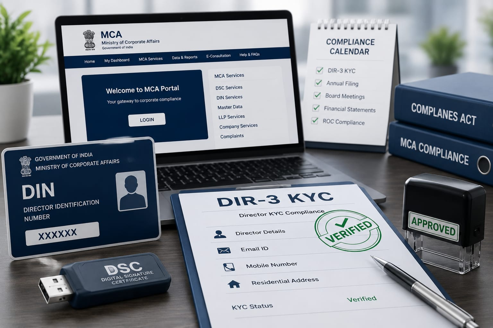
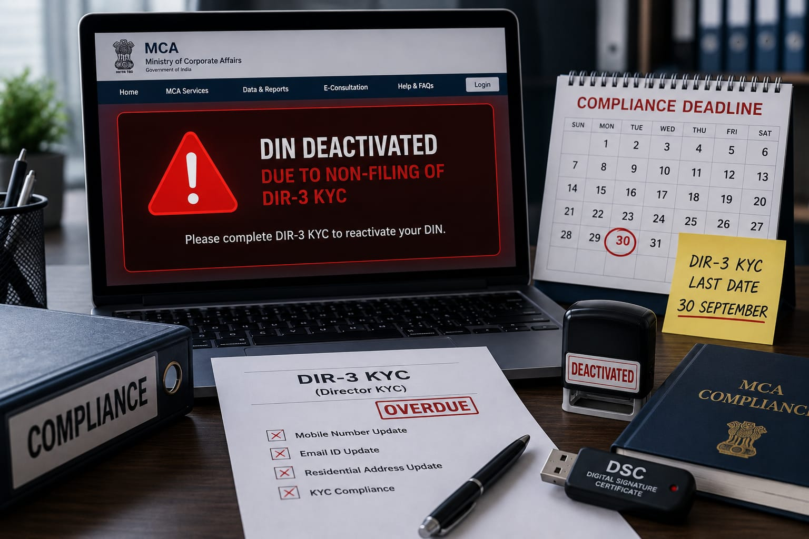

A simpler cycle, but not less responsibility
The Companies (Appointment and Qualification of Directors) Amendment Rules, 2025, effective 31 March 2026, revise Rule 12A. The core change is a move from annual DIR-3 KYC to a recurring three-financial-year cycle. The new rule also makes change reporting more explicit.
Bullet-point summary
- Use Form DIR-3 KYC Web for the revised framework.
- Do not assume that a reduced routine frequency means you can ignore a change in mobile, email or residential address.
- Keep a compliance calendar for each DIN, not only for each company.
- For uncertainty about the first due cycle, confirm the requirement on MCA before filing.
What is DIR-3 KYC?
DIR-3 KYC is MCA’s identity and contact-detail verification process for individuals holding a Director Identification Number (DIN). It helps keep MCA’s director records current and supports regulatory oversight. The revised framework uses a single DIR-3 KYC Web form for routine KYC, updates and DIN reactivation-related filing.

Why has MCA changed the compliance requirement?
The amended framework reduces repetitive annual routine filing and standardises the process through a single webform. At the same time, it keeps MCA’s records current through a separate event-based update requirement for key personal contact details. In practical terms: routine verification is less frequent, but data changes should be reported sooner.
DIR-3 KYC new rules 2026: key changes
Once every three financial years
The routine KYC filing requirement is now once in every three consecutive financial years instead of annually.
One DIR-3 KYC Web form
The amended rules use Form DIR-3 KYC Web rather than the earlier separate e-form and web-service approach.
30 June in the applicable year
The revised routine due date is on or before 30 June of the year immediately following the relevant three-financial-year period.
30-day update trigger
A personal mobile number, email address or residential-address change must be updated through DIR-3 KYC Web within 30 days.
Old DIR-3 KYC rules vs new DIR-3 KYC rules
| Topic | Earlier framework | Revised framework from 31 March 2026 |
|---|---|---|
| Routine KYC frequency | Annual | Once every three consecutive financial years |
| Routine due date | Generally 30 September of the following financial year | 30 June of the applicable year after the three-year period |
| Filing channel | DIR-3 KYC e-form and DIR-3 KYC Web service | Form DIR-3 KYC Web |
| Mobile/email/address changes | Updates were handled through available form processes | DIR-3 KYC Web within 30 days for mobile, email or residential-address changes |
| Timely routine filing fee | As prescribed under the then-applicable MCA fee rules | Nil for timely filing, subject to current fee rules |
Who needs to file, when is it required, and when should details be updated?
Who needs DIR-3 KYC Web?
Every individual holding a DIN as on 31 March of a financial year is covered by the revised Rule 12A routine KYC requirement, subject to the applicable cycle and MCA portal conditions. This commonly includes company directors and other DIN holders; do not treat a non-active company role as an automatic exemption.
When is the routine DIR-3 KYC required?
It is required once every three consecutive financial years, by 30 June of the applicable year. The precise first due cycle can depend on the rule’s transition and your DIN history. Confirm the portal requirement rather than relying only on a calendar reminder.
When must you update mobile, email or residential address?
File DIR-3 KYC Web within 30 days of a change in personal mobile number, email address or residential address. This event-based update does not replace the separate three-year routine KYC cycle.
Example: no change in details
A director whose cycle is due in the applicable third year should complete DIR-3 KYC Web by 30 June, even if no personal detail has changed.
Example: email changes mid-cycle
A director who changes their personal email must update it within 30 days. They should still track the normal triennial KYC due year separately.
Penalty and DIN deactivation risk

Important compliance alert
If the applicable DIR-3 KYC requirement is not completed within the prescribed timeline, your DIN may be marked as 'Deactivated due to non-filing of DIR-3 KYC'. Reactivating the DIN may require payment of the applicable MCA government fee along with completion of the required filing.
A deactivated DIN can interrupt director-related MCA actions. Do not wait until a transaction, appointment, annual filing or bank request makes a valid DIN urgent. MCA’s revised fee rules distinguish timely filing, subsequent change filings and delayed/reactivation-related filings; verify the amount shown by MCA at the time of filing.
DIR-3 KYC compliance timeline
| Date | Development |
|---|---|
| 2018 | DIR-3 KYC requirements and DIN deactivation provisions were introduced through amendments to the directors’ rules. |
| 2019 | MCA moved toward a simplified web-based verification service for directors who had already completed KYC. |
| 31 December 2025 | MCA notified the Companies (Appointment and Qualification of Directors) Amendment Rules, 2025 (G.S.R. 943(E)). |
| 31 March 2026 | Revised Rule 12A came into force: triennial routine KYC and the DIR-3 KYC Web framework. |
| 22 April 2026 | Revised MCA fee rules addressed DIR-3 KYC Web fee categories. |
Practical DIR-3 KYC checklist
Before filing
- Confirm the DIN status and live KYC requirement on MCA.
- Keep a valid, registered DSC where required.
- Verify the personal mobile number, email and residential address.
During the cycle
- Record the next routine due year for every DIN.
- Update covered contact/address changes within 30 days.
- Keep filing acknowledgement and payment record.
If DIN is deactivated
- Identify the pending requirement on the MCA portal.
- Complete the required DIR-3 KYC Web filing.
- Pay the government fee shown as applicable and retain evidence.
DIN Deactivated? We Can Help
If your DIN has been deactivated due to non-filing of DIR-3 KYC, TaxBro can assist you with the complete DIN reactivation process.
Our services include
- DIR-3 KYC Filing Assistance
- DIN Reactivation Support
- Document Verification
- MCA Compliance Guidance
Professional Fees
₹499 onwards if you already have a valid DSC. If you do not have a valid DSC or your DSC has expired, DSC charges will apply separately.
Government fees payable to the Ministry of Corporate Affairs (MCA), including any applicable DIN reactivation fee, are separate from our professional charges.
Need professional assistance? Visit our Contact Page to connect with the TaxBro team and get quick assistance for DIN reactivation, DIR-3 KYC filing, DSC issuance, and other MCA compliance services.
Frequently asked questions
Is DIR-3 KYC required every year after 31 March 2026?
No. The routine requirement under the revised Rule 12A is once every three consecutive financial years, subject to the applicable cycle and MCA requirements.
What is the new DIR-3 KYC due date?
The revised rule provides a 30 June deadline in the applicable year. Confirm the precise cycle for your DIN from MCA before relying on a date.
Do I need to update my mobile number or email immediately?
Yes. A change in personal mobile number, email address or residential address must be reported in DIR-3 KYC Web within 30 days.
Can I use the old DIR-3 KYC e-form?
The revised rule refers to Form DIR-3 KYC Web. Follow the currently available MCA portal workflow and instructions.
What is the penalty for late DIR-3 KYC?
Your DIN may be deactivated for non-filing. Reactivation requires the required filing and payment of the MCA fee applicable at that time.
Use the three-year cycle as a planning benefit, not a reason to forget KYC
The 2026 change reduces routine annual compliance, but it makes a clean director master and a DIN-wise compliance calendar more valuable. Keep contact details current, verify MCA’s live requirement before every filing, and act early if a DIN is deactivated.
This article is intended for informational purposes only and should not be treated as legal or professional advice. Always refer to the latest MCA notifications and official circulars before taking any compliance action.
Internal linking suggestions
Link this guide from the MCA Activity Code Finder, your company-incorporation and DSC service pages, annual-filing content, and the India compliance blog hub. Official references: G.S.R. 943(E), MCA DIR-3 KYC instruction kit, and ICSI April 2026 update.